Comprendre le cours
1. De l’information au signal
Un bit vaut 0 ou 1. Un symbole est l’un des états que l’émetteur peut envoyer pendant un intervalle. Avec quatre états équiprobables, un symbole peut représenter deux bits. Le récepteur récupère l’horloge, mesure le signal au bon instant et décide quel état était le plus probable.
En bande de base, le train d’impulsions occupe les fréquences autour de zéro. Pour transmettre dans une autre plage, un modulateur déplace l’information autour d’une porteuse. Entre les deux, le canal atténue le signal, déforme parfois les impulsions et ajoute du bruit. Le TEB (proportion de bits reçus avec une erreur), ou BER en anglais, est le nombre de bits erronés divisé par le nombre de bits observés.

En simplex, les données vont dans un seul sens. En semi-duplex, les deux côtés alternent. En duplex intégral, ils peuvent émettre en même temps. Une liaison série envoie les bits les uns après les autres, une liaison parallèle utilise plusieurs voies simultanées. Le récepteur récupère son rythme grâce à une horloge commune, à une horloge envoyée séparément ou à des transitions dans les données. En asynchrone, les bits de début et de fin encadrent chaque caractère.
La latence inclut le trajet, les traitements et les attentes. La gigue en mesure la variation entre paquets. Pour 20 m et une vitesse de 0,66c, la propagation seule dure environ 101 ns. Sur une atténuation de 4 dB, le rapport de tensions vaut 10−4/20 à impédances égales. 5 V donnent donc environ 3,15 V.
Au récepteur, l’amplificateur faible bruit remet le signal à un niveau exploitable. L’égaliseur réduit la distorsion du canal. Une fois l’instant de lecture retrouvé, le récepteur décide du symbole selon des seuils. Un signal plus fort peut aider contre le bruit, et une égalisation aide quand les impulsions ont été déformées.
2. Reconnaître les codes bande de base sur un oscilloscope
Dans chaque figure, un trait vertical marque une limite de symbole. Lis d’abord les données au-dessus, puis le niveau ou le sens de la transition sur le tracé. Les exemples partent des huit premiers bits du TD p. 5, puis ajoutent quatre zéros pour comparer les deux motifs HDB3 (code bipolaire qui évite les longues suites de zéros). Les conventions viennent du cours p. 27–41.
NRZ unipolaire et bipolaire
Un bit garde le même niveau sur toute sa durée. Pour 1, les deux tracés restent à +E. Pour 0, le premier revient à 0 V et le second à −E. Quand plusieurs bits se suivent au même niveau, le récepteur doit se fier à son horloge pour compter les cases.

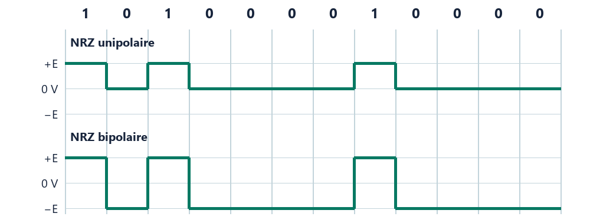
Manchester
Les deux demi-bits ont des signes opposés. Dans la convention dessinée, 1 descend de +E à −E et 0 monte. Cherche la transition au milieu, même si une autre apparaît à la frontière. Cette transition régulière aide à retrouver l’horloge.

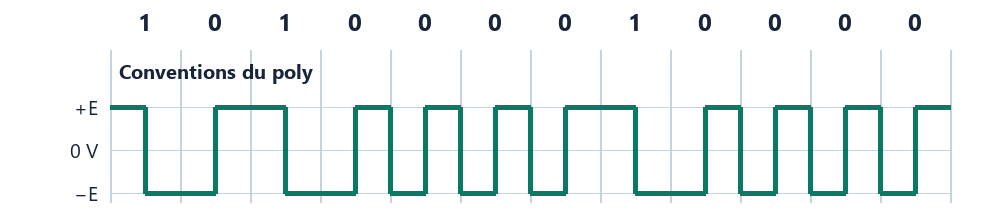
Miller
Un 1 impose une transition au milieu. Un 0 laisse son milieu tranquille. À la frontière entre deux 0 consécutifs, le niveau change. Pars du niveau initial indiqué puis colle la suite des demi-bits sans réinitialiser le niveau à chaque bit.

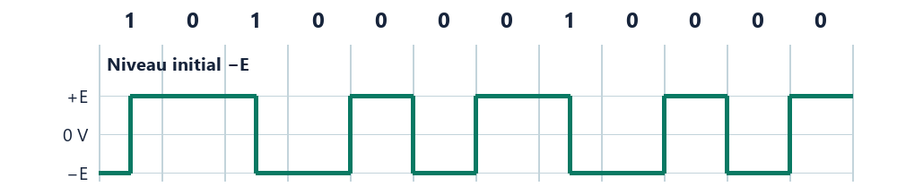
AMI et RZ bipolaire
En AMI, les 1 alternent +E, −E, +E. Un 0 vaut 0 V et chaque marque occupe tout le bit. En RZ bipolaire, le premier demi-bit vaut +E pour 1 et −E pour 0. Le second revient toujours à 0 V. Même une suite de 0 y produit des transitions.

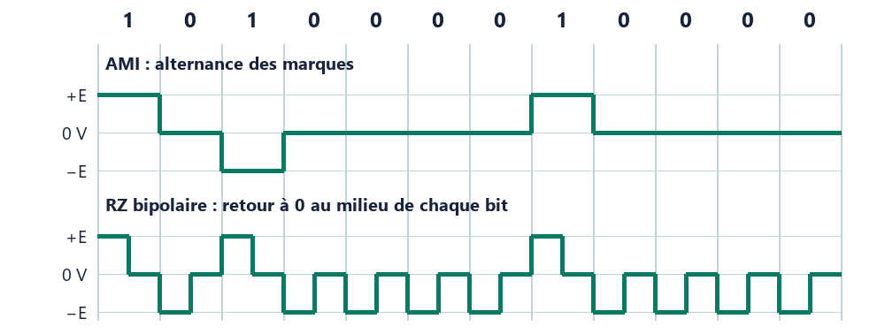
HDB3
Il conserve l’alternance AMI, puis remplace chaque bloc de quatre 0 par 000V ou B00V. V reprend le signe de la dernière impulsion non nulle, ce qui viole l’alternance. B est une impulsion de bourrage qui, elle, respecte l’alternance. Après un nombre pair de marques depuis la dernière violation, choisis B00V. Après un nombre impair, choisis 000V. Les violations alternent ainsi de signe.

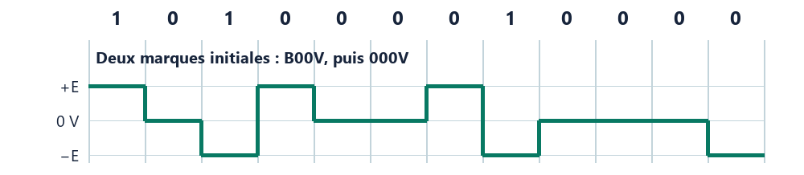
2B1Q
Forme des paires et remplace chacune par un niveau. La table du poly donne 00 → −3A, 01 → −A, 11 → +A, 10 → +3A. Comme le récepteur choisit parmi quatre niveaux, il utilise trois seuils. Le débit est deux fois le nombre de symboles par seconde.

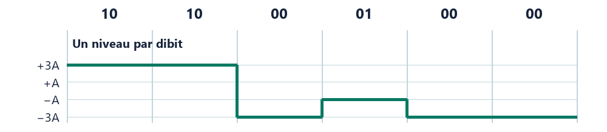
MLT-3 et NRZI en Ethernet
Sur le MLT-3 du 100BASE-TX, un 1 fait avancer dans le cycle des niveaux et un 0 conserve le plateau. Le transcodage 4B/5B placé avant force des transitions suffisamment fréquentes. Sur le 100BASE-FX, le NRZI utilise des inversions entre deux niveaux selon le bit de commande, après le 4B/5B. Le 1000BASE-T utilise ses quatre paires en parallèle et des niveaux PAM-5. Sur 1000BASE-SX/LX, la liaison optique utilise un codage 8B/10B.

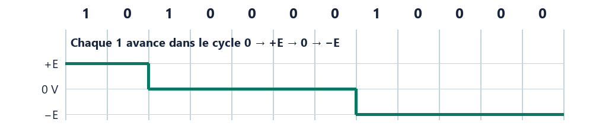
3. Bande passante, bruit et débit
Une impulsion courte demande des fréquences variées. Un canal ou un filtre étroit étale les impulsions, qui peuvent alors se recouvrir. C’est l’interférence entre symboles. Le critère de Nyquist vise à annuler, aux instants d’échantillonnage, la contribution des symboles voisins. Un filtre en cosinus surélevé augmente la largeur occupée selon son coefficient α. Sur le diagramme de l’œil, la hauteur ouverte indique la marge en amplitude et la largeur ouverte la marge sur l’instant de décision.
Avec M états et une rapidité R en bauds, le débit brut vaut D = R log₂(M). Dans le modèle idéal en bande de base sans bruit et de largeur B, la rapidité limite de Nyquist vaut 2B. La capacité de Shannon en présence de bruit vaut B log₂(1+S/N), avec S/N en linéaire. Cette capacité est une borne théorique.
Pour comparer des transmissions numériques, calcule l’énergie par bit Eb = S/D. Avec du bruit blanc sur la bande B du TD, N0 = N/B. On obtient Eb/N0 = (S/N) × (B/D). Un rapport de puissances devient 10 log₁₀(rapport) en dB.
4. Filtrer le signal et lire le diagramme de l’œil

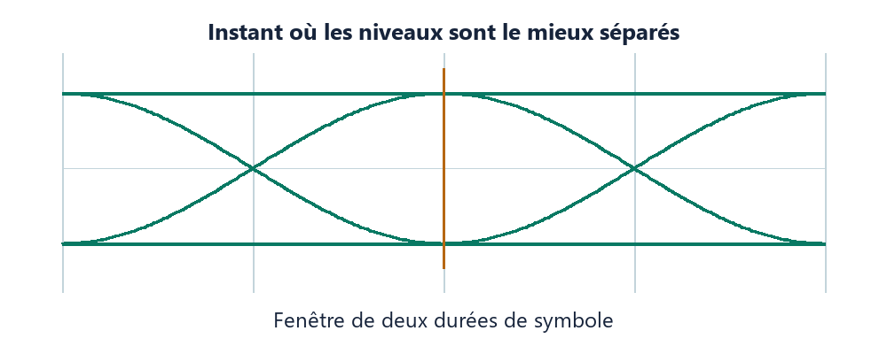
Superpose des fenêtres de deux symboles, chacune alignée sur la même horloge. Les intersections diffuses révèlent du bruit ou un mauvais alignement. À l’instant de décision, mesure verticalement l’espace libre entre les niveaux. Horizontalement, regarde jusqu’où tu peux déplacer cet instant sans toucher les traces. Le masque du cours délimite une zone qui doit rester dégagée.
Un filtre de Nyquist donne une impulsion avec une valeur non nulle au centre et des zéros aux instants où l’on doit lire les symboles voisins. Entre ces instants, les impulsions se recouvrent. Ce recouvrement est acceptable si les zéros arrivent au bon moment. En cosinus surélevé, B = (1+α)R/2 pour la largeur en bande de base à fréquences positives. Au TD, 100 Mbaud et α=0,5 donnent 75 MHz, compatibles avec le canal de 90 MHz du modèle.
5. Déplacer un spectre autour d’une porteuse
Le modulant contient l’information. La porteuse est une sinusoïde à la fréquence fp. Multiplie deux cosinus de fréquences f1 et f2. L’identité trigonométrique sépare le produit en deux cosinus aux fréquences somme et différence, chacun pondéré par la moitié du produit des amplitudes. Pour un signal formé de plusieurs fréquences, la même opération translate son spectre.
En AM usuelle, le signal multiplie une amplitude positive qui varie. Si cette amplitude change de signe, l’enveloppe rectifiée ne suit plus fidèlement le message. En AM à porteuse supprimée, le récepteur peut remultiplier par une porteuse synchronisée, puis filtrer les composantes hautes. En FM, c’est la fréquence instantanée qui suit le signal modulant. En PM, c’est le déphasage. Un indice de modulation ou une excursion de fréquence décrit l’amplitude de la variation et influe sur la bande utilisée.
AM · Tracer l’enveloppe, le signal et son spectre
Dans le TD p. 13, la porteuse est à 25 kHz et son amplitude vaut 5 V. Le modulant est 2 cos(2π·2000t). Le multiplicateur vaut 0,2, donc l’indice de modulation vaut 0,4. L’expression complète est 5[1 + 0,4 cos(2π·2000t)] cos(2π·25000t).
- Dessine d’abord les limites entre lesquelles oscille la porteuse. L’enveloppe du haut vaut 5(1+0,4 cos), celle du bas est son opposée. Le haut varie entre 3 V et 7 V. Le modulant refait un cycle en 0,5 ms et la porteuse en 40 µs.
- Trace les oscillations rapides entre les enveloppes. Sur une capture inconnue, lis les deux niveaux extrêmes de l’enveloppe positive. L’indice vaut (Amax−Amin)/(Amax+Amin) et le niveau de porteuse vaut (Amax+Amin)/2.
- Développe le produit des cosinus. Le terme de porteuse reste à 25 kHz avec amplitude temporelle 5 V. Les deux bandes latérales sont à 23 et 27 kHz, chacune d’amplitude 1 V. En spectre bilatéral, chaque cosinus donne deux raies de poids moitié. Pour un modulant de largeur 3 kHz en bande de base positive, le canal AM va de 22 à 28 kHz, soit 6 kHz.
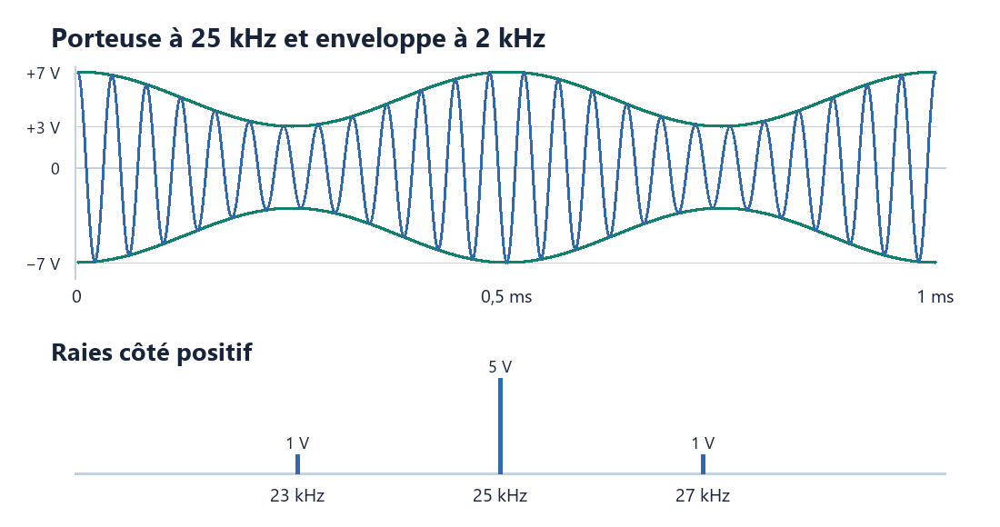
Récupérer le modulant (TD p. 14)
Un détecteur d’enveloppe suit les variations lentes de l’amplitude. Il faut une constante de temps assez grande devant la période de porteuse et assez petite devant celle de l’enveloppe. Pour une AM ordinaire, l’enveloppe suit le modulant tant que le facteur entre crochets reste positif. On retire ensuite sa composante continue.
En démodulation synchrone, multiplie par le cosinus de référence à 25 kHz. Avec cos²(a)=(1+cos(2a))/2, la sortie est (5/2)[1+0,4 cos(2π·2000t)][1+cos(2π·50000t)]. Garde la composante à 2 kHz et le continu avec le passe-bas, élimine les raies vers 48, 50 et 52 kHz. Une fois le continu enlevé, il reste un cosinus à 2 kHz dont le gain peut être ajusté.
FM et PM · Passer de la phase à la fréquence instantanée
Si la phase totale est θ(t) en radians, la fréquence instantanée est θ′(t)/(2π). Dans 2 sin(1000t+0,5 cos(2π·10t)), la dérivée donne 1000/(2π)−5 sin(2π·10t) en hertz. En PM, le modulant agit directement sur la phase. En FM, il agit sur la fréquence instantanée, donc il faut intégrer la fréquence pour retrouver la phase.
Pour l’exercice FM p. 15, la porteuse vaut 25 kHz. Un modulant de crête 2 V provoque un écart maximal de 5 kHz, donc le coefficient est de 2500 Hz/V. Pour un modulant à 2 kHz, fᵢ(t)=25000+5000 cos(2π·2000t), qui varie entre 20 et 30 kHz. En intégrant, on obtient 5 cos(2π·25000t+2,5 sin(2π·2000t)). Le nombre 2,5 est l’indice β=Δf/fm.
Sur une sinusoïde FM, les raies sont espacées de fm de part et d’autre de la porteuse. On utilise la règle de Carson pour une largeur utile approchée, 2(Δf+fmax). Dans le cas audio du TD, 75 kHz d’excursion et 20 kHz de fréquence modulante maximale donnent 190 kHz autour de 88 MHz. Le rapport Δf/fmax vaut 3,75.
6. Moduler l’amplitude, la fréquence ou la phase
En ASK, l’amplitude dépend du symbole. En FSK, c’est la fréquence. En PSK, c’est la phase. La phase mesure le décalage d’un cycle par rapport à une référence. En BPSK, les deux points sont opposés. En QPSK, quatre points représentent chacun deux bits.
Le plan I/Q donne deux coordonnées au symbole. Chaque voie multiplie une porteuse, et les deux porteuses sont décalées d’un quart de tour. Une 16-QAM combine amplitude et phase pour transporter quatre bits par symbole. À énergie moyenne et conditions comparables, des points plus serrés réduisent la marge face au bruit. Dans une constellation étiquetée en Gray, les voisins immédiats diffèrent souvent d’un seul bit.
ASK, OOK, FSK et PSK · Refaire les chronogrammes du TD p. 16
À 1 Mbit/s et un bit par symbole, chaque case dure 1 µs. Prends le train 1 | 0 | 1 | 1. Pour l’ASK du TD, représente le modulant normalisé par +1 ou −1 et multiplie la porteuse par 1 + 0,5 × modulant. La porteuse de référence à 0 dBm sous 50 Ω vaut √(2×0,001×50)≈0,316 V crête. Ses amplitudes deviennent ≈0,474 V pour 1 et ≈0,158 V pour 0 dans cette convention.
- OOK. Supprime la porteuse dans la case du 0. Pour les 1, garde une amplitude constante. Le schéma alterne donc présence et absence.
- FSK. Garde l’amplitude. Mets 868,5 MHz dans les cases des 1 et 867,5 MHz dans celle du 0 avec cette attribution. Sur un dessin, représente la fréquence la plus élevée par des oscillations plus rapprochées.
- BPSK. Continue à une seule fréquence. Pour la convention de phase 0 pour 1 et π pour 0, inverse le signe de la sinusoïde pendant la case du 0.
Le débit ASK filtré reste 1 Mbaud. Pour α=0,4, la largeur du spectre transposé autour de la porteuse vaut (1+α)R = 1,4 MHz. Pour comparer les courbes de bruit, convertis d’abord Eᵦ/N₀ avec B/D. Ici, 10 dB de S/N et B/D=2,5 donnent environ 14 dB de Eᵦ/N₀. Le graphe du sujet indique SNR sur l’axe. Précise la convention que tu suis avant d’y placer ton résultat.
7. Calculer un point I/Q et comparer les constellations
Avec la convention du poly, v(t)=I cos(ωt)−Q sin(ωt). Écris C=I+jQ. Son module √(I²+Q²) donne l’amplitude de la sinusoïde, et sa phase est atan2(Q,I), ce qui tient compte du quadrant. Avec I=0,5 et Q=1, le point est en haut à droite, l’amplitude vaut ≈1,118 V et la phase ≈63,4°.
Une BPSK se ramène à deux valeurs opposées sur l’axe I. Une FSK peut s’obtenir en faisant tourner C à +Δf ou −Δf pendant le symbole. En QPSK normalisée, les coordonnées d’un point diagonal valent ±1/√2 : le point reste à distance 1 de l’origine. En M-PSK, augmenter M resserre les angles, tandis qu’en QAM (modulation qui choisit conjointement l’amplitude et la phase) plusieurs rayons sont possibles.

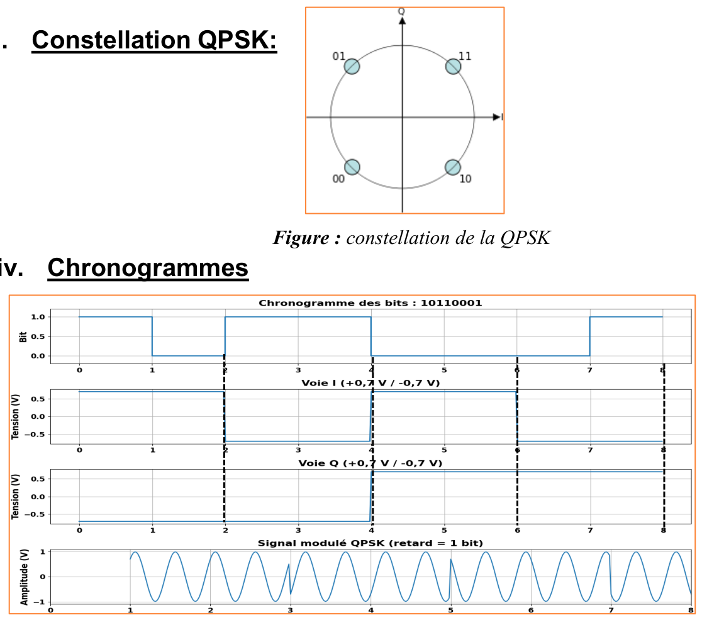
Au décodage I/Q, deux mélangeurs puis deux passe-bas isolent les composantes. Une phase de référence imparfaite fait pivoter la constellation. La DQPSK code des différences de phase successives. Par exemple, +45° puis +135° portent la phase de 0° à 45°, puis à 180°. Le TD emploie cette méthode pour changer de constellation à chaque symbole. L’EVM compare les points reçus aux points de référence et mesure leur écart relatif. Le TEB compte, lui, les erreurs sur les bits.
16-QAM · Relier le mot du TD à la tension et à la largeur du canal
Le TD p. 19 sépare les quatre bits en deux dibits. Fais lire le premier au convertisseur de la branche I, le deuxième à celui de Q. La table donne 00 → −1, 01 → −0,33, 10 → +0,33, 11 → +1. Croise les quatre niveaux de I avec les quatre de Q pour dessiner les seize points. Place ainsi 1110 en (1 ; 0,33), puis 0010 en (−1 ; 0,33).
13 dBm correspondent à 101,3 mW. Sous 50 Ω, calcule d’abord la tension efficace √(PR)≈1,0 V, puis la crête ≈1,41 V. Pour 1110, avec les coefficients de la table et le signe de Q du montage, écris ≈1,41[cos(ωt)−0,33 sin(ωt)]. En inversant l’exercice au récepteur, multiplie par chacune des références I et Q puis retire les termes à deux fois la porteuse. Les termes utiles réduits de moitié permettent de retrouver I et Q après compensation du gain.
À 27 Mbit/s, quatre bits par symbole donnent 6,75 Mbaud. Le cosinus surélevé α=0,4 occupe 1,4×6,75=9,45 MHz autour de 645 MHz, soit environ 640,275 à 649,725 MHz. Au TD p. 23, l’exercice vidéo donne α=1,3, hors du domaine usuel de 0 à 1 du cosinus surélevé. Demande la valeur prévue avant de valider un choix de modulation à partir de cette donnée.
8. Compression sans perte
Compresser consiste à écrire les mêmes informations avec moins de bits lorsqu’il y a de la redondance. Le décodeur doit reconstruire exactement l’original. Le gain dépend des données et des bits nécessaires pour décrire le code. Le facteur de compression rapporte taille d’origine à taille codée. L’entropie H = −Σ p(x) log₂ p(x) mesure l’information moyenne d’un symbole dans le modèle du cours.
RLE · Compter les répétitions consécutives
Lis AAAABBCCA de gauche à droite. Les quatre premiers A forment un groupe, les deux B le suivant. Le A de fin forme son propre groupe. Le fichier peut ainsi contenir 4A · 2B · 2C · 1A. Pour décoder, répète chaque lettre autant de fois que l’indique son compteur. Le RLE gagne quand les suites sont longues. Sur ABABAB, il ajouterait un compteur à chaque symbole.
Huffman · Donner des codes courts aux symboles fréquents
Prends A=4, B=3, C=2, D=1. Regroupe les deux plus petits poids C et D, de somme 3. Regroupe ce nœud de poids 3 avec B. Relie enfin ce poids 6 et A à la racine. En étiquetant les branches 0 et 1, un arbre possible donne A=0, B=10, C=110, D=111. Pour décoder 010111, pars de la racine et reviens-y après chaque feuille. Tu lis 0 | 10 | 111, soit ABD. Aucun mot complet n’est le début d’un autre. L’encodage des dix symboles utilise 19 bits avec cet arbre, contre 20 avec des mots fixes de 2 bits, sans compter l’arbre ni l’en-tête.
Dans la version adaptative, émetteur et récepteur changent la table dans le même ordre à partir des symboles déjà traités. Pour l’exercice p. 24 du TD, lis le code dans la table en vigueur, émets-le, puis seulement incrémente le poids et applique la règle de mise à jour du sujet. Inverser cet ordre désynchronise les deux côtés.
LZW · Mémoriser des suites déjà rencontrées
Commence par un dictionnaire A=0, B=1. Lis ABAB. Quand AB manque, émets le code 0 pour A et ajoute AB=2. À la rencontre de BA, émets 1 pour B et ajoute BA=3. La dernière suite AB existe, donc émets 2. Les codes sont 0, 1, 2. Le décodeur combine la suite précédente et le premier caractère de la suivante pour refaire les ajouts. S’il reçoit le prochain code libre, il reconstruit le cas particulier par la suite précédente suivie de sa propre première lettre.

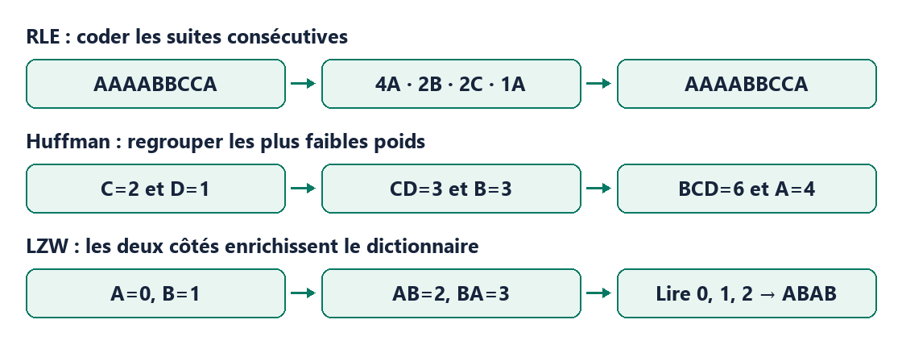
Compression avec perte · Décider quels détails garder
Le cours prend l’audio MPEG comme exemple. Un codeur analyse des bandes de fréquences et peut représenter avec moins de précision certaines composantes peu audibles. La quantification ramène un ensemble de valeurs à un nombre fini de paliers. Deux valeurs d’origine peuvent tomber sur le même palier et devenir indiscernables au décodage. Augmenter la compression peut donc faire apparaître des défauts.
9. Distinguer compression, détection et correction
- Choisir où agir. Dans la chaîne TNT du TD, les six flux perdent de la redondance lors de la compression vidéo. Ensuite, ils gagnent de la redondance lors du codage canal. La quantité présente en sortie de l’un sert de point de départ au calcul de l’autre.
- Détection ou correction. Le CRC vérifie un reste polynomial par des XOR. Un code de distance minimale d détecte jusqu’à d−1 erreurs ou en corrige jusqu’à ⌊(d−1)/2⌋ en décodage par proximité. Le rendement k/n vaut données utiles divisées par taille codée.
- Codes et rafales. Le code de Hamming (7,4) utilise trois contrôles pour localiser une erreur simple. Reed–Solomon protège des symboles. Un code convolutif dépend des bits précédents et Viterbi cherche le chemin de métrique minimale dans son treillis. L’entrelacement répartit une rafale entre plusieurs mots. Le poinçonnage supprime des bits codés selon un motif connu, ce qui relève le rendement et réduit la redondance.
10. Détecter, corriger et dimensionner la redondance
Le bit de parité impose un nombre pair ou impair de 1. En parité paire, 1011 reçoit un 1 pour donner quatre 1. Une inversion unique change la parité, deux inversions peuvent passer. Avec Hamming (7,4), les positions 1, 2 et 4 sont des contrôles. Elles vérifient des groupes qui se recoupent. Si les contrôles 1 et 4 échouent et le 2 réussit, le syndrome vaut 1+4=5 : inverse le bit 5 sous l’hypothèse d’une erreur simple.
Le CRC forme un reste en division binaire. Il sert à détecter une corruption, par exemple en fin de trame. Reed–Solomon ajoute de la redondance au niveau de symboles de plusieurs bits. Pour le code C(204,188) du TD, 16 symboles sont ajoutés et jusqu’à 8 symboles erronés inconnus sont corrigeables sous les hypothèses usuelles du code. Une erreur de plusieurs bits dans le même symbole compte alors comme une erreur de symbole.
Un code convolutif combine le bit courant et de précédents bits mémorisés. À chaque étape du treillis, Viterbi compare les sorties attendues aux bits observés, additionne les distances et conserve le meilleur chemin arrivant à chaque état. Le gain de codage se lit comme l’écart en Eb/N0 nécessaire pour atteindre le même TEB, à conventions identiques.
Viterbi · Dérouler le treillis du TD p. 27
On mémorise deux bits, donc il y a quatre états. Démarre dans 00. À partir de chaque état, essaye le bit entrant 0 et le bit entrant 1. La première sortie recopie ce bit. La seconde est le XOR du bit entrant et des deux bits mémorisés. Le nouvel état contient le bit entrant puis l’ancien bit le plus récent.
| État au départ | Entrée 0 → sortie / nouvel état | Entrée 1 → sortie / nouvel état |
|---|---|---|
| 00 | 00 / 00 | 11 / 10 |
| 01 | 01 / 00 | 10 / 10 |
| 10 | 01 / 01 | 10 / 11 |
| 11 | 00 / 01 | 11 / 11 |
Le reçu est 11 | 11 | 10 | 10. À la deuxième paire, le chemin qui est en 10 et reçoit le bit 0 prédit 01. Il ajoute 1 à son coût et arrive dans l’état 01. À la paire suivante, l’état 10 peut être atteint de deux façons. Le chemin 001 y arrive avec un coût de 5 et 101 avec un coût de 1. On garde 101, car les transitions suivantes dépendront du même état dans les deux cas.
| Paire lue | 00 | 01 | 10 | 11 |
|---|---|---|---|---|
| Départ | 0 | — | — | — |
| 11 | 2 | — | 0 | — |
| 11 | 4 | 1 | 2 | 1 |
| 10 | 3 | 2 | 1 | 2 |
| 10 | 4 | 3 | 2 | 1 |
Remonte depuis l’état 11 de coût 1. Les états retenus sont 00 → 10 → 01 → 10 → 11. Les bits entrants au fil du trajet forment 1011. On suppose ici que le TD laisse l’état final libre. Si le codeur remet explicitement ses deux mémoires à zéro à la fin, on part de l’état final imposé.
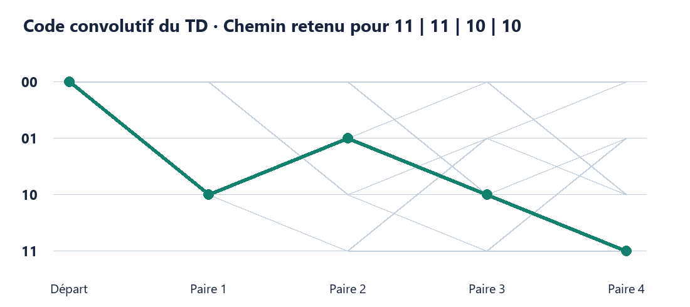
11. Partager le canal et l’adapter aux multi-trajets
Le multiplexage répartit les utilisateurs en temps (TDM), en fréquence (FDM) ou en codes (CDMA (accès multiple par codes distincts)). Dans un CDMA idéal, une corrélation avec le code du bon utilisateur conserve son signal et annule les contributions des codes orthogonaux. Le DSSS étale un signal en multipliant ses symboles par une séquence plus rapide. Il peut servir à l’étalement et au repérage d’un préambule.
Les trajets réfléchis arrivent en retard. Si l’étalement maximal vaut Δt, le cours estime la bande de cohérence par Bc ≈ 1/Δt. Un canal plus large peut subir des variations de gain selon la fréquence. La diversité exploite plusieurs versions d’une information, par exemple sur des fréquences suffisamment espacées, à plusieurs instants ou sur plusieurs antennes. Un mobile introduit un décalage Doppler d’ordre v fp/c et le temps de cohérence s’estime par son inverse.
En OFDM, on envoie en parallèle sur N sous-porteuses. Leur espacement vaut Δf = 1/Tu, avec Tu la durée utile. Si Δf est bien inférieur à Bc, chaque sous-canal voit approximativement un gain constant. Le préfixe cyclique recopie la fin du symbole devant lui. Lorsqu’il couvre l’étalement des trajets et que la réception est synchronisée, le récepteur peut éliminer le chevauchement du symbole précédent sur la portion utile. Le préfixe prend du temps, les erreurs de fréquence dégradent l’orthogonalité et les crêtes peuvent solliciter l’amplificateur.
12. OFDM, étalement et systèmes multi-antennes

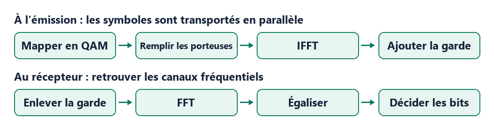
Une IFFT additionne les sinusoïdes des sous-porteuses pour fabriquer les échantillons transmis. Une FFT refait l’opération inverse côté réception. Le DMT (technique qui répartit les données entre de nombreuses sous-porteuses), illustré par l’ADSL dans le TD, adapte le nombre de bits à la qualité de chaque sous-canal. L’OFDMA partage des groupes de ressources entre utilisateurs au lieu de réserver toutes les sous-porteuses à une seule émission.
En FHSS, émetteur et récepteur changent de fréquence selon la même suite. En DSSS, ils restent sur la bande étalée et utilisent une séquence de chips : un bit 1 devient par exemple un code et un bit 0 son opposé. Le produit scalaire à la réception récupère le signe du bit. Avec deux codes orthogonaux alignés, ce principe peut séparer deux utilisateurs en CDMA.
Le multiplexage spatial SDM distingue des chemins spatiaux. En MIMO, plusieurs antennes permettent de recevoir plusieurs observations. Si les chemins sont assez indépendants, on peut séparer des flux émis en parallèle, ou exploiter la redondance pour rendre une transmission plus robuste. La matrice du canal contient les gains et phases de chaque paire d’antennes.
Comment le récepteur retrouve-t-il les lettres sans séparateur ?
Exemple de code de Huffman : A → 0, B → 10, C → 11. Lis 010110 de gauche à droite. Le premier 0 donne A. Le 1 suivant est incomplet : lis le bit suivant pour obtenir 10, donc B. Les bits restants donnent 11 puis 0, donc C puis A.
On retrouve ABCA car aucun mot du code ne commence par un autre mot complet. Cette propriété dite « de préfixe » indique où s’arrêter à chaque lettre. Le code sert à raccourcir les symboles fréquents : sur une longue suite, le gain dépend de leurs fréquences et du coût éventuel de transmission de l’arbre.
| Bits lus | Lettre retrouvée | Bits à lire |
|---|---|---|
| 0 | A | 10110 |
| 10 | B | 110 |
| 11 | C | 0 |
| 0 | A | Fin |
Sigles et acronymes
- AM · Amplitude Modulation
- Modulation d’amplitude.
Exemple. Une porteuse radio devient plus ou moins forte au rythme du signal à transmettre. - ASK · Amplitude Shift Keying
- Modulation numérique avec plusieurs amplitudes.
Exemple. Une porteuse forte peut coder 1, tandis qu’une faible amplitude code 0. - BER · Bit Error Rate
- Proportion de bits reçus avec une erreur.
Exemple. C’est le nom anglais du TEB. Deux bits faux sur mille donnent 0,002. - CDMA · Code Division Multiple Access
- Accès multiple par codes distincts.
Exemple. Deux émissions sur une même bande peuvent être distinguées grâce à leurs codes. - CRC · Cyclic Redundancy Check
- Contrôle calculé pour détecter des erreurs de transmission.
Exemple. Le récepteur recalcule le CRC puis compare avec la valeur reçue. - DMT · Discrete Multitone
- Technique qui répartit les données entre de nombreuses sous-porteuses.
Exemple. En ADSL, une sous-porteuse bruitée peut transporter moins de bits. - FFT · Fast Fourier Transform
- Calcul efficace de la représentation fréquentielle d’un signal.
Exemple. La FFT d’un sinus à 1 kHz permet de repérer la composante à 1 kHz. - FM · Frequency Modulation
- Modulation de fréquence.
Exemple. La fréquence instantanée de la porteuse varie avec le signal audio. - FSK · Frequency Shift Keying
- Modulation numérique qui change la fréquence.
Exemple. Un émetteur choisit une fréquence pour 0 et une autre pour 1. - HDB3 · High Density Bipolar of order 3
- Code bipolaire qui évite les longues suites de zéros.
Exemple. Une suite de quatre zéros est remplacée par un motif reconnaissable. - IQ · In-phase and Quadrature
- Composantes en phase et en quadrature d’un signal.
Exemple. En QPSK, un symbole se place avec deux coordonnées I et Q. - LZW · Lempel–Ziv–Welch
- Compression avec un dictionnaire construit en parcourant les données.
Exemple. Une suite déjà vue peut être remplacée par le code correspondant dans le dictionnaire. - MIMO · Multiple-Input Multiple-Output
- Technique qui utilise plusieurs antennes en émission et en réception.
Exemple. Un point d’accès peut transmettre plusieurs flux sur la même bande. - MLT-3 · Multi-Level Transmit, trois niveaux
- Codage de ligne qui alterne entre trois niveaux.
Exemple. Sur un 1, le signal passe au prochain niveau du cycle, tandis qu’un 0 le maintient. - NRZ · Non Return to Zero
- Codage qui conserve le niveau pendant le bit.
Exemple. Dans une variante NRZ, une suite de 1 garde le même niveau. - NRZI · Non Return to Zero Inverted
- Codage qui représente les bits par transition ou maintien.
Exemple. Selon la convention retenue, un 1 commande une transition du niveau. - OFDM · Orthogonal Frequency Division Multiplexing
- Transmission sur plusieurs sous-porteuses orthogonales.
Exemple. Une liaison utilise plusieurs petites bandes en parallèle dans un même canal. - OFDMA · Orthogonal Frequency Division Multiple Access
- Partage des ressources en sous-porteuses entre utilisateurs.
Exemple. La borne peut attribuer différentes ressources fréquentielles à deux stations. - OOK · On-Off Keying
- Modulation numérique qui allume ou coupe la porteuse.
Exemple. La présence de porteuse code un bit, son absence code l’autre. - PSK · Phase Shift Keying
- Modulation numérique qui choisit entre plusieurs phases.
Exemple. En BPSK, les deux bits possibles sont représentés par deux phases opposées. - QAM · Quadrature Amplitude Modulation
- Modulation qui choisit conjointement l’amplitude et la phase.
Exemple. Une 16-QAM utilise seize points de constellation pour coder quatre bits par symbole. - QPSK · Quadrature Phase Shift Keying
- Modulation qui utilise quatre phases.
Exemple. Quatre phases possibles permettent de coder deux bits par symbole. - RLE · Run-Length Encoding
- Compression qui code les répétitions par leur longueur.
Exemple. Une suite AAAA peut être décrite par « quatre A ». - RZ · Return to Zero
- Codage qui revient au niveau zéro au cours du bit.
Exemple. Une impulsion remplit une partie du bit puis revient à zéro. - TEB · Taux d’erreur binaire
- Proportion de bits reçus avec une erreur.
Exemple. Deux erreurs sur 1 000 bits donnent un taux de 0,002.
Du cours aux TD et TP
Support croisé · Poly R304/R305 (12 chapitres), TD de transmission (p. 2–36) et TP IQ/QPSK de Télécom 3. Le TP sert à vérifier sur l’oscilloscope le lien entre dibits, voies I/Q et constellation.
| Notion du cours | Où la travailler | Ce que tu dois savoir refaire |
|---|---|---|
| Cahier des charges, chaîne, horloge, débit et bruit | TD p. 2–4 et 8 | Distinguer temps de propagation, gigue, baud, débit et TEB. Partir des unités pour passer de dBm à Eᵦ/N₀. |
| Codage bande de base et Ethernet | TD p. 5–7 | Tracer NRZ, Manchester, Miller, RZ, HDB3 et 2B1Q. Sur 100BASE-TX, appliquer la table 4B/5B et poursuivre le cycle MLT-3. |
| Capacité, filtrage et œil | TD p. 8–11 | Convertir S/N avant Shannon. Calculer la bande d’un cosinus surélevé et lire l’instant de décision sur un œil. |
| Transposition, AM et FM | TD p. 12–15 | Prédire les raies somme et différence. Retrouver un indice AM sur une enveloppe, puis calculer la fréquence instantanée d’une FM. |
| ASK, FSK, PSK et rôle du bruit | TD p. 16 | Sur un bit, expliquer ce qui change pour chaque modulation. Comparer les occupations avec les mêmes hypothèses de filtrage. |
| I/Q, QPSK, QAM et phase différentielle | TD p. 17–23 et TP IQ/QPSK | Passer des bits aux projections puis au signal réel. Choisir une valence compatible avec la bande et mesurer l’erreur sur la constellation. |
| Compression | TD p. 24–25 | Construire l’arbre Huffman, mettre à jour la table adaptative après émission, refaire le dictionnaire LZW. Expliquer ce que la quantification fait perdre en compression avec perte. |
| Parité, CRC, Hamming, convolutif et redondance | TD p. 26–27 | Repérer une erreur simple, suivre un XOR polynomial et retrouver le mot reçu avec les états et coûts de Viterbi. |
| Multiplexage et dimensionnement | TD p. 28–29 | Séparer débit utile, débit brut, redondance, rendement et garde. Calculer d’abord par flux puis pour le multiplex. |
| Canal sélectif, étalement, diversité et OFDM | TD p. 30–36 | Faire une corrélation CDMA, comparer retard et garde, déduire bande et temps de cohérence et distinguer DMT, OFDMA et MIMO. |
Questions TD & TP
TD p. 3–4 · Respecter le TEB sur la liaison de 50 m
Énoncé. Pour une paire torsadée de 50 m, à 100 Mbit/s, avec 200 mW émis, 0,6 mW de bruit, 30 dB de perte par 100 m et 50 MHz de bande, calcule N₀, Eᵦ et les rapports. Le TEB est-il sous 10⁻⁵ ? Trouve les trois réglages qui permettraient de passer le seuil.

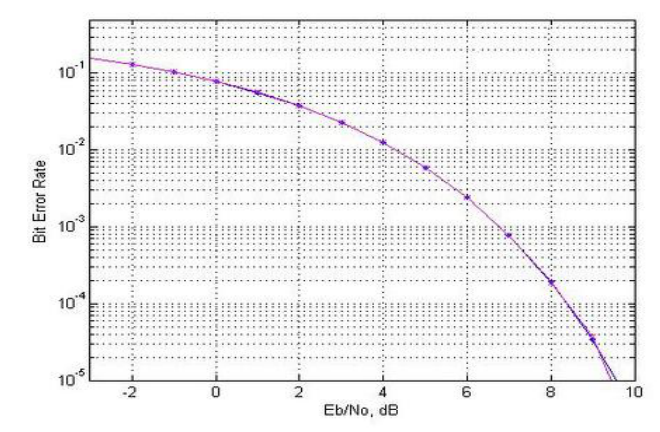
- La perte vaut 30 × 50/100 = 15 dB. L’émission de 200 mW vaut 23,01 dBm. À la réception, il reste 8,01 dBm soit 6,325 mW. Les 0,6 mW de bruit valent −2,22 dBm.
- Divise le bruit en watts par 50 MHz : N₀ = 1,2 × 10⁻¹¹ W/Hz, soit −79,21 dBm/Hz. Divise le signal en watts par 100 Mbit/s : Eb ≈ 6,325 × 10⁻¹¹ J.
- S/N ≈ 10,54, soit 10,23 dB. Eb/N₀ ≈ 5,27, soit 7,22 dB. La courbe fournie passe sous 10⁻⁵ au voisinage de 9,5 dB. Le réglage actuel est sous ce seuil.
- Ramène 9,5 dB à 8,91 en linéaire. Pour la solution débit, résous S/(D N₀) = 8,91 : D ≈ 59,1 Mbit/s au seuil. Pour les deux autres, la réception doit atteindre ≈10,70 mW. Avec 200 mW à l’émission la perte maximale est ≈12,72 dB, donc 42,4 m à 0,3 dB/m. Avec 15 dB de perte, il faut ≈338 mW à l’émission. Choisis un réglage du bon côté du seuil avec une marge, car il est lu sur un graphe.
TD p. 5 · Tracer les sept codes en bande de base
Énoncé. Complète les chronogrammes NRZ unipolaire et bipolaire, Manchester, Miller, RZ bipolaire, HDB3 et 2B1Q pour la suite 10100001100001010000 de la grille p. 5.
Découpe la grille aux limites des bits 1 0 1 0 0 0 0 1. Avec 1=+V et 0=0, le NRZ unipolaire donne +V, 0, +V, 0, 0, 0, 0, +V. En NRZ à deux polarités remplace chaque 0 V par −V si le cours adopte cette convention.
Pour Manchester, subdivise chaque case en deux. Dans la convention du poly, 1 descend et 0 monte. Les quatre premiers bits donnent + − | − + | + − | − +. En Miller, marque le milieu des bits 1, puis seulement les frontières entre les zéros consécutifs. L’état à droite d’une transition est l’inverse de l’état juste avant.
Pour HDB3, à la suite de quatre zéros, utilise le motif 000V si le nombre de marques depuis la dernière violation est impair, B00V s’il est pair. B respecte l’alternance et V reprend le signe de la dernière impulsion non nulle. En 2B1Q, commence par former 10 | 10 | 00 | 01 et applique les quatre niveaux du tableau du cours.

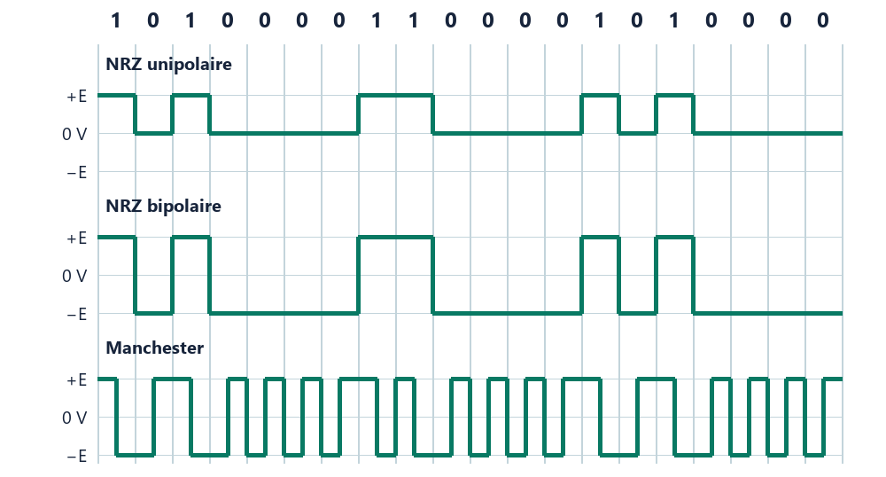

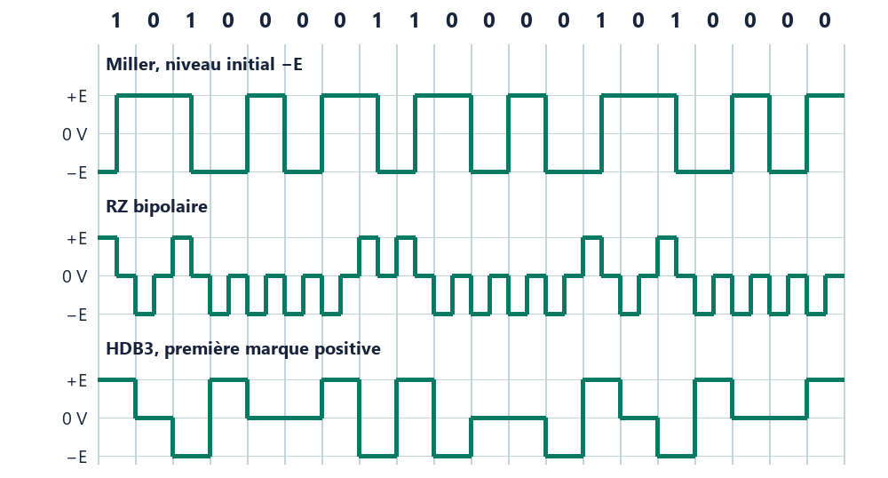

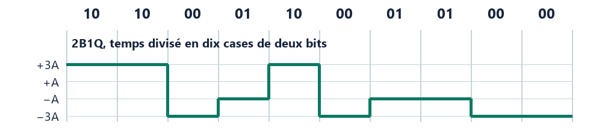
TD p. 7 · Du 4B/5B au MLT-3
Énoncé. Pour la trame 1011101000010010 à 100 Mbit/s, coder les blocs avec la table 4B/5B, tracer le MLT-3 en commençant à +E au premier 1, puis calculer la durée de bit après précodage et la fréquence du signal si les bits valent tous 1.
- Découpe en
1011 | 1010 | 0001 | 0010. La table du TD donne10111 | 10110 | 01001 | 10100. - Avant le premier bit, place le tracé à 0. À chaque 1, avance dans le cycle
+E → 0 → −E → 0. À chaque 0, conserve le niveau. Les cinq niveaux du premier bloc sont+E, +E, 0, −E, 0. Continue le cycle au bloc suivant sans remettre l’état à zéro. - Le précodage passe à 125 Mbit/s, donc une case dure 8 ns. Avec des 1 partout, le cycle prend quatre cases, donc 32 ns, soit 31,25 MHz. Cette fréquence de la séquence périodique renseigne sur l’intérêt du MLT-3. Elle ne donne pas à elle seule la largeur de tout son spectre.
TD p. 8 et 10 · Choisir la valence et régler le filtre
Énoncé. Pour la liaison filaire de largeur 100 MHz et de rapport signal/bruit 17 dB, calculer les limites théoriques et proposer un code pour 300 Mbit/s. Dans l’exercice de filtrage, la liaison NRZ est à 100 Mbit/s sur un canal de 90 MHz, avec un cosinus surélevé de coefficient 0,5. Vérifier ce que change le filtre.
- La rapidité idéale maximale est 2B=200 Mbaud. Convertis 17 dB en ≈50,12. La formule de Shannon donne C≈567,6 Mbit/s, et le modèle du cours donne une valence limite √(1+50,12)≈7,15.
- Un code à deux états demanderait 300 Mbaud, trop pour cette limite. Avec quatre états, 300/2=150 Mbaud. Un 2B1Q convient au calcul théorique si la marge réelle du récepteur suffit.
- Dans la liaison de 90 MHz, un NRZ à 100 Mbaud vérifie la borne 2B. Ses impulsions rectangulaires ont pourtant des composantes au-delà de 90 MHz. Après mise en forme, (1+0,5)×100/2 = 75 MHz, dans la bande du canal. Dessine les zéros de la réponse impulsionnelle aux échantillons voisins pour justifier la réduction des IES.
TD p. 9 · Estimer le débit de l’ADSL et du DMT
Énoncé. Avec B=2,2 MHz et S/N=30 dB, calcule la capacité du modèle global. Calcule ensuite le débit pour 3 Mbaud et une valence de 16. Pour le modèle DMT, complète le tableau des 256 sous-canaux et additionne leurs débits.
- 30 dB donne 1000 en linéaire. Shannon donne 2,2×log₂(1001)≈21,93 Mbit/s. Le choix 3 Mbaud vérifie 3<4,4 et 16 états donnent 4 bits par symbole, soit 12 Mbit/s. La valence théorique du modèle du cours est √1001≈31,64.
- La largeur moyenne d’un sous-canal est 2,2 MHz/256≈8,59 kHz. Dans l’approximation de Nyquist du TD, le plafond associé est ≈17,19 kbaud, au-dessus des 12 kbaud choisis.
- Pour chaque colonne, multiplie le nombre de sous-canaux par log₂(valence) et 12 kbaud. Les colonnes actives donnent 1920, 8400, 7200, 600, 480, 240 et 24 kbit/s. Les quatre sous-canaux inactifs apportent 0. Total 18,864 Mbit/s dans ce modèle.
TD p. 12 et 17 · Transposer une fréquence et calculer le point I/Q
Énoncé. Multiplier les cosinus d’amplitudes 3 et 2 et de fréquences 2 kHz et 25 kHz, puis tracer le spectre résultant. Sur le modulateur I/Q, placer le point I=0,5 V, Q=1 V et calculer l’amplitude et la phase.
- Développe le produit avec
cos a cos b = [cos(a+b)+cos(a−b)]/2. Les composantes à 23 et 27 kHz ont chacune une amplitude temporelle de 3. Dans un spectre bilatéral avec la convention usuelle, chacune a aussi sa raie à la fréquence négative et le poids de chaque raie vaut 1,5. - Place I à droite et Q vers le haut. Le module est √(0,25+1)≈1,118 et
atan2(1,0.5)donne 63,4°. Avec la convention du TD, v(t)≈1,118 cos(ωt+63,4°).
TD p. 18 · Tracer I et Q pour une suite QPSK
Énoncé. En QPSK à 1 kbit/s, représente les chronogrammes I(t) et Q(t) et le chemin sur la constellation pour 111000110110. Justifie les amplitudes de 0,707 V.
- Découpe
11 | 10 | 00 | 11 | 01 | 10. Lis le plan du cours : 11 est en haut à droite, 10 en bas à droite, 00 en bas à gauche, 01 en haut à gauche. - Trace I avec les signes
+ + − + − +, puis Q avec+ − − + + −. Chaque plateau dure 2 ms puisque deux bits prennent deux fois 1 ms. Avec un vecteur d’amplitude 1 V à 45°, chaque projection en valeur absolue vaut 1/√2≈0,707 V. - Relie les points dans l’ordre des dibits pour montrer la succession des symboles. Les transitions entre points sur un vrai tracé dépendent du filtrage.
TD p. 24 · Compresser la séquence par Huffman
Énoncé. On transmet BACFGABDDACEACG avec l’alphabet A à G. Calculer la taille en mots fixes, les probabilités, l’entropie et la taille obtenue après construction d’un arbre de Huffman.
- La suite contient 15 symboles. Un alphabet de 7 valeurs demande 3 bits fixes par symbole, donc 45 bits. Compte A quatre fois, C trois fois, B/D/G deux fois chacun et E/F une fois chacun. Divise chaque compte par 15 pour obtenir sa probabilité.
- Calcule −Σp log₂p ≈ 2,657 bits/symbole, soit ≈39,85 bits comme référence moyenne sur 15 symboles sous ce modèle.
- Fusionne E et F en un poids 2. Continue en choisissant à chaque fois les deux poids minimaux. En cas d’égalité, plusieurs arbres conviennent. Un jeu valide est A=
11, C=00, B=010, D=011, G=100, E=1010, F=1011. Les longueurs pondérées donnent 40 bits, soit un facteur 45/40=1,125, hors en-tête.
TD p. 25 · Construire le dictionnaire LZW
Énoncé. Coder BDACFABDBACBDBG avec le dictionnaire initial A=0, B=1, …, G=6. À chaque étape, indiquer le code émis et le nouvel élément mémorisé.
BDest inconnu. Émets 1 pour B et ajoute BD=7. En repartant de D, la suiteDAmanque aussi. Émets 3 pour D et ajoute DA=8. Les entrées suivantes sont AC=9, CF=10, FA=11, AB=12.- Lors de la rencontre suivante de
BD, garde le groupe et tente d’ajouter la lettre B.BDBmanque, donc émets 7 et ajoute BDB=13. Continue avec BA=14, ACB=15 puis BDBG=16. - Les codes émis dans l’ordre sont
1, 3, 0, 2, 5, 0, 7, 1, 9, 13, 6. Le dernier 6 encode G. Pour écrire les bits, applique la largeur des adresses à l’étape indiquée dans le tableau.
TD p. 26 · Calculer les distances et contrôler une trame par CRC
Énoncé. Trouve la distance minimale du code {0000 0000, 0000 1111, 1111 0000, 1111 1111}, puis analyse le reçu 0000 0111. Code ensuite la trame 11010 avec le générateur x²+x, et contrôle l’inversion du bit de poids fort.
Dans le premier code, deux mots diffèrent, suivant la paire, sur un seul bloc de quatre bits ou sur les deux blocs. La distance minimale est 4. Le mot 0000 0111 est invalide. Il est à distance 1 de 0000 1111 et à distance 3 de 0000 0000. On le corrige vers le premier sous l’hypothèse d’au plus une erreur. Pour le tableau des quatre mots de longueur 5, en comparant les six paires on obtient une distance minimale de 3. Il détecte donc toutes les erreurs doubles ou corrige toutes les erreurs simples, selon le mode de décodage.
Avec e=11010, E(x)=x⁴+x³+x. Écris 1101000 en réservant deux bits au contrôle. Divise par 110 en XOR : 1101000 ⊕ 1100000 = 0001000, puis 0001000 ⊕ 0001100 = 0000100 et 0000100 ⊕ 0000110 = 0000010. Le reste 10 complète le mot 1101010. Au récepteur, le mot entier donne un reste nul. En inversant le bit de poids fort, l’erreur x⁶ donne un reste x, et le contrôle signale la trame.
TD p. 27 · Coder 1011, puis retrouver les bits avec Viterbi
Énoncé. Pour le registre dessiné dans le TD, déduis les deux sorties par bit, calcule la séquence produite par 1011 depuis l’état 00 et retrouve le chemin le plus probable pour le reçu 11111010.
- Le fil du haut recopie le bit courant. La somme modulo deux du bas prend le bit courant et les deux derniers. Le code transforme un bit en deux bits, donc son rendement est 1/2.
- Avec l’état (bit précédent, avant-dernier), le chemin est
00 → 10 → 01 → 10 → 11. Les sorties sont11 | 01 | 10 | 10. - Découpe le reçu
11 | 11 | 10 | 10. Écris à chaque branche le nombre de différences avec la paire reçue. Pour un même état d’arrivée, garde le chemin dont la somme est la plus petite. À la fin le chemin de coût minimal est celui de1011, avec un seul écart sur la deuxième paire.
TD p. 28–29 · Compter les créneaux et la redondance
Énoncé. Dans la trame à 10 créneaux de 8 bits, V1 occupe un créneau à 128 kbit/s, V2 deux, V3 quatre. Calcule les débits et le rendement, puis ajoute une garde de 20 µs. Dans la chaîne de vidéosurveillance, calcule le débit après compression, regroupement des six flux, codes et poinçonnage.
La voie V1 met 8 bits dans chaque trame. Pour 128 kbit/s, on émet une trame toutes les 62,5 µs. V2 occupe 16 bits, soit 256 kbit/s. V3 occupe 32 bits, soit 512 kbit/s. Les 80 bits sortent à 1,28 Mbit/s et 56 sur 80 sont utiles, soit 70 %. Si on allonge chaque cycle de 20 µs, le débit moyen des bits envoyés devient 80/82,5 µs ≈ 970 kbit/s ; le débit instantané durant le créneau actif reste 1,28 Mbit/s. Au même rythme de ligne, la part de durée portant des données utiles passe à ≈53 %.
Pour les caméras, compte 1920 × 1080 × 25 × 24 bits par seconde avant compression, soit 1,24416 Gbit/s chacune. Divise par 500, multiplie par 7 créneaux équivalents, puis par 204/188 et par 2. Après poinçonnage, multiplie par 3/4. Le résultat est ≈28,35 Mbit/s, soit ≈9,45 Mbaud en 8-PSK avant l’intervalle de garde.
TD p. 30–31 · Séparer les deux utilisateurs en CDMA
Énoncé. Deux émetteurs envoient 101 et 110 avec C₁=[1,1,−1,−1] et C₂=[1,−1,1,−1]. Donne la somme des signaux et retrouve les deux messages par corrélation.
Pose 1→+1 et 0→−1. Multiplie chaque signe par son code. La somme donne successivement [2,0,0,−2], [0,−2,2,0] et [0,2,−2,0]. Chaque bloc contient quatre éléments par bit.
Prends le produit scalaire avec C₁ = [1,1,−1,−1]. Tu obtiens +4, −4, +4, donc 101. Avec C₂ = [1,−1,1,−1], tu obtiens +4, +4, −4, donc 110. Le produit croisé des codes alignés vaut zéro. Pour trouver leur alignement, utilise par exemple la corrélation d’un préambule connu.
TD p. 32–34 · Dimensionner l’OFDM en 5G et en TNT
Énoncé. En 5G, traite les 100 m d’écart de trajet pour un canal de 20 MHz découpé en 64 sous-porteuses avec 1 µs de garde. À 100 km/h et 3,5 GHz, évalue aussi le Doppler. En TNT, pars des six chaînes de 270 Mbit/s avant compression, et vérifie l’intérêt de la garde avec 2 km de différence de trajet.
- En 5G, 100 m en plus donnent 0,333 µs et Bc ≈ 3 MHz. La bande de 20 MHz dépasse cette valeur. Sans OFDM, l’intervalle par symbole est 1/12,5 Mbaud = 80 ns : des trajets peuvent déborder sur plusieurs symboles.
- Le TD découpe 20 MHz en 64 sous-porteuses, soit 312,5 kHz chacune et Tu = 3,2 µs. Le préfixe de 1 µs dépasse l’étalement, et 312,5 kHz est bien plus étroit que 3 MHz.
- À 100 km/h, convertis la vitesse à 27,8 m/s. Le décalage Doppler maximal est de l’ordre de 27,8 × 3,5 GHz / c ≈ 324 Hz. Avec la convention du cours Tc ≈ 1/fd, cela donne ≈3,1 ms, bien plus que 4,2 µs par symbole total. La variation se surveille sur plusieurs symboles avec des pilotes.
- Pour le premier exemple TNT du TD, 6 × 270 / 67,5 = 24 Mbit/s. Après entrelacement et codes, 24 × 204/188 × 3/2 ≈ 39,06 Mbit/s, soit ≈1,08 kbaud sur chacune des 6047 sous-porteuses utiles en 64-QAM. Une garde de 926/32 ≈ 28,9 µs couvre les 6,7 µs associés aux 2 km de différence de trajet.
TP IQ et QPSK · Associer les dibits aux points
Énoncé. Affiche la constellation du modulateur IQ, relève les coordonnées stables et relie les points aux dibits connus du banc.
- Sur le banc de Télécom 3, affiche I et Q, puis déclenche sur l’horloge du symbole. Lis les niveaux au milieu du plateau pour une série de dibits connus.
- Place I à l’horizontale et Q à la verticale. Associe chaque dibit à son couple mesuré et vérifie qu’on retrouve quatre points. Prends la convention de câblage du sujet pour établir les signes.
- Affiche la constellation ou le mode XY, puis compare les points stables et les transitions. Si l’assignation est tournée d’un quart de tour, vérifie l’ordre des voies et la phase de la référence avant de modifier l’étiquetage.
TD p. 24 · À quel moment actualiser le code de Huffman ?
Énoncé reformulé. À partir des quatre premières lettres de la suite AEBABCEE du TD, expliquer comment émetteur et récepteur restent synchronisés quand le code évolue.
- Lis la colonne correspondant à l’état avant la lettre. Pour A, le tableau indique 11. Émets ces bits, augmente le compteur de A puis applique la règle de mise à jour. Le récepteur décode avec son ancien état avant d’effectuer exactement la même mise à jour.
- Pour les quatre premiers symboles, le sujet donne 11 / 1001 / 010 / 11. Les barres représentent les limites de lettres dans la correction. Pour la suite, construis une colonne par symbole dans l’ordre B, C, E, E et conserve la convention de bits de la feuille.
- Contrôle : les deux côtés doivent avoir les mêmes compteurs après chaque lettre. Si tu actualises avant de lire la prochaine lettre d’un seul côté, même un flux reçu intact peut se décoder de travers.